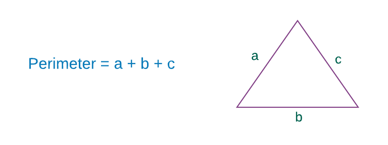

Entice se stejně jako seznamy a arraye používají k ukládání vícerých hodnot. Zapisují se do závorek a jejich elementy jsou odděleny čárkami.
> ( 1, 2 )
(1,2)
> ( "Mia", "Vincent" )
("Mia","Vincent")Podobně jako u seznamů, doporučuje Elm používat mezery kolem závorek.
Na rozdíl od seznamů a arrayů, mohou entice obsahovat hodnoty různého druhu.
> ( 1, 2.5, 'a', "Butch" )
(1,2.5,'a',"Butch")Mohou dokonce obsahovat jiné kolekce jako seznamy a arraye nebo entice samotné.
> ( [ 1, 2 ], [ "Jules", "Wolf" ] )
([1,2],["Jules","Wolf"])
> array = Array.fromList [ 5, 6 ]
Array.fromList [5, 6]
> (array, [ 1, 2 ], ( "Jules", "Wolf" ) )
(Array.fromList [5,6],[1,2],("Jules","Wolf"))A co seznamy? Mohou obsahovat entice? Odpověď je "yes".
> [ ( 1, 2 ), ( 3, 4 ), ( 5, 6 ) ]
[(1,2),(3,4),(5,6)]Vzpomeňte si, že seznamy mohou obsahovat hodoty stejného typu. V příkladu nahoře mají všechny tři entice dva elementy. Co se stane, budou-li entice různých velikostí?.
> [ ( 1, 2 ), ( 3, 4, 5 ) ]
-------------------------- TYPE MISMATCH --------------------------
The 1st and 2nd entries in this list are different types of values.
7| [ ( 1, 2 ), ( 3, 4, 5 ) ]
^^^^^^^^^^^
The 1st entry has this type:
( number, number1 )
But the 2nd is:
( number, number1, number2 )Jak Elm poukazuje, entice ( 1, 2 ) a ( 3, 4, 5 ) jsou různého typu hodnot, protože mají různou velikost. Aby byly entice stejného typu, musejí obsahovat stejný počet a typ hodnot. Takže toto nebude chodit také:
> [ ( 1, 2 ), ( "Sansa", "Ygritte" ) ]
-------------------------- TYPE MISMATCH --------------------------
The 1st and 2nd entries in this list are different types of values.
7| [ ( 1, 2 ), ( "Sansa", "Ygritte" ) ]
^^^^^^^^^^^^^^^^^^^^^^
The 1st entry has this type:
( number, number1 )
But the 2nd is:
( String, String )První entici tvoří dvojice čísel, zatímco druhou tvoří dvojice řetězců, tudíž nejsou stejného typu. A senznam nemůže mít hodnoty různého typu.
Úprava entic
V předchozích sekcích jsme si říkali, že seznamy a arraye jsou neměnitelné (immutable). Jednou vytvořeny, nejdou změnit. Ovšem, přesto že jsou neměnitelné, můžeme k nim přidávat a z nich odebírat hodnoty.
> myList = [ 1, 2, 3, 4 ]
[1,2,3,4]
> myList ++ [ 5 ]
[1,2,3,4,5]
> List.drop 1 myList
[2,3,4]Jak je to možné? Je to možné proto, že Elm vytváří zdání, že přidává (nebo odebírá) hodnoty ze seznamu, když ve skutečnosti za scénou vytváří úplně nový seznam. Když vytiskneme myList, zjistíme, že se jeho hodnoty nezměnily.
> myList
[1,2,3,4]Z praktického hlediska vše co nás zajímá, je možnost přidávat a odebírat hodnoty z kolekce. Jak to Elm dělá, nás zajímat příliš nemusí.
Nicméně, v kapitole 4 se dozvíme, že neměnnost má dalekosáhlé důsledky a že je jádrem některých vpravdě úžasných vlastností.
Entice jsou neměnitelné stejně jako seznamy a arraye. Avšak zde jde Elm o krok dále pro udržení a zachování neměnitelnosti. Pro entice nejsou definovány žádné funkce či operátory pro připojení nebo vypuštění hodnoty.
Když o tom zapřemýšlíte, dojdete k závěru, že tyto restrikce mají smysl. Dříve jsme objevili, že aby byly entice stejného typu, musí obsahovat stejný počet hodnot. Kdybychom přidali nebo odebrali hodnotu z entice, měnili bychom jejich typ, což není případ u seznamů a arrayů. Dále, kdybychom mohli přidat nebo odebrat hodnoty z entice, začaly by vypadat stejně jako seznamy a arraye, pouze s jedním rozdílem, že mohou obsahovat hodnoty různého typu. V příští kapitole uvidíme, že existuje datová struktura zvaná record, která může obsahovat různé typy hodnot. Bez této rigidity by byly entice snadno nahraditelné jinými datovými strukturami.
Protože nemůžeme přidávat nebo odebírat hodnoty z entic, měli bychom je používat jenom když víme předem, kolik elementů budeme potřebovat.
Používání entic
Přes svoji rigiditu mohou být entice docela užitečné. Dále je uvedeno několik situací, v nichž nám entice usnadňují žití.
Representing Complex Data
Entice mohou být použity k prezentaci široké škály dat. Na příklad, chceme-li prezentovat něčí jméno, věk a seznam sourozenců, můžeme to snadno udělat s enticí:
> ( "Jon Snow", 14, [ "Sansa", "Arya", "Bran", "Rob", "Rickon" ] )
("Jon Snow",14,["Sansa","Arya","Bran","Rob","Rickon"])Returning Multiple Values From a Function
Obvyklý způsob v Elmu je použití entic pro víceré vratné hodnoty funkce. Abychom poznali jak to chodí, napišme funkci, která rozhodne platnost určitého e-mailu. Přidejte následující definici funkce hned nad main v Playground.elm.
validateEmail email =
let
emailPattern =
Regex.regex "\\b[A-Za-z0-9._%+-]+@[A-Za-z0-9.-]+\\.[A-Za-z]{2,}\\b"
isValid =
Regex.contains emailPattern email
in
if isValid then
( "Valid email", "green" )
else
( "Invalid email", "red" )
main
...Nyní změňte funkci main takto:
main =
validateEmail "thedude@rubix.com"
|> toString
|> Html.textNakonec importujte modul Regex hned pod importem modulu Html.
import Html
import RegexSpusťte elm-reactor v terminálu z adresáře beginning-elm, pokud již neběží a běžte na stránku http://localhost:8000/elm-examples/Playground.elm ve vašem prohlížeči. Mělo by se ukázat ("Valid email","green"). Funkce validateEmail používá regular expression ke zjištění, zda je daný e-mail platný či není. Vrací entici, obsahující dvě hodnoty:
-
Je-li e-mail platný, vrací se řetězec "Valid email", jinak se vrací "Invalid email".
-
Použitou barvu při zobrazení stavu platnosti.
Jak vidíte, použití entice nám velmi usnadnilo návrat vícerých hodnot. As you can see, using a tuple made it very easy for us to return multiple values.
Being Explicit About the Structure of Data
Řekněme, že chceme spočítat obvod trojůhelníka s pomocí vzorce, uvedeného v obrázku.

Jeden způsob prezentace stran trojúhelníka je s použitím seznamu.
> sides = [ 5, 4, 6 ]
[5,4,6]Nyní napišme funkci, která v replu spočítá obvod:
> trianglePerimeter sides = List.sum sides
<function>K sečtení všech stran trojúhelníka jsme použili funkci List.sum. Aplikujeme-li tuto funkci na seznam sides, dostaneme obvod.
> trianglePerimeter sides
15Co se stane, když tutéž funkci trianglePerimeter použijeme pro seznam čtyř stran?
> trianglePerimeter [ 5, 4, 6, 8 ]
23Spokojeně si spočítá obvod, i když jsme zadali čtyři strany. Chceme-li se ujistit, že byly funkci zadány jenom tři strany, musíme přidat ještě nějaký kód pro ověření, že vstupní seznam má tři elementy. Když ale místo seznamu použijeme entici, udělá to Elm za nás. Zkusme si to.
> trianglePerimeter ( a, b, c ) = a + b + c
<function>
> trianglePerimeter ( 5, 4, 6 )
15Zatím dobrý až výborný. Nyní zkusme aplikovat trianglePerimeter na entici se čtyřmi elementy.
> trianglePerimeter ( 5, 4, 6, 8 )
------------------------ TYPE MISMATCH ----------------------------
The argument to function `trianglePerimeter` is causing a mismatch.
7| trianglePerimeter ( 5, 4, 6, 8 )
^^^^^^^^^^^^^^
Function `trianglePerimeter` is expecting the argument to be:
( number, number, number )
But it is:
( number, number1, number2, number3 )Tady to máme. Elm poukazuje na to, že potřebujeme zadat entici s pouze třemi elementy. Výběr správné datové struktury pro určitý problém často eliminuje jemné potíže.
Získání hodnot
Elm poskytuje dvě funkce (first a second) pro vyzvednutí hodnot z entice se dvěma elementy rovněž známými jako pár. Ukládání dat v párech je v Elmu zcela obvyké. Funkce first vrací první hodnotu páru a second hodnotu druhého elementu.
> Tuple.first ( 5, 10 )
5
> Tuple.second ( 5, 10 )
10
> Tuple.first ( "Pam", "Jim" )
"Pam"
> Tuple.second ( "Pam", "Jim" )
"Jim"Modul Tuple je automaticky do replu načítán. Proto jej nemusíme explicitně importovat.
Nemůžeme-li použít funkce first a second u entic s více než dvěma elementy, jak jinak můžeme číst jejich hodnoty? V tomto případě musíme použít "pattern matching", se kterým jsme se seznámili již dříve. Zde jej máme zas.
> trianglePerimeter ( a, b, c ) = a + b + c
<function>
> trianglePerimeter ( 5, 4, 6 )
15Funkce trianglePerimeter používá pattern matching pro rozbor (deconstruction) zadané entice a přiřazuje její první, druhou a třetí hodnotu konstantám a, b a c.
- Pattern Matching
- Jak již bylo zmíněno v odstavci Case Expression, pattern matching je akt porovnávání jedné či více hodnot s předdefinovaným vzorem a hledání případné shody. Vzor, který porovnáváme výše, je entice se třemi a pouze třemi čísly. Seznámíme se s několika dalšími příklady na pattern matching u entic v kapitole 4.
Pro uložení více než dvou hodnot je ve většině případů nejlepší použití kolektoru record místo entice. Přístup k hodnotám v "záznamu" je mnohem snadnější než u entice. Potřebujeme-li ovšem zajistit aby datová struktura obsahovala jen určený počet hodnot jako v případě funkce trianglePerimeter, je entice naše nejlepší volba.
Mapování párů
Modul Tuple také poskytuje dvě další funce pro transformaci hodnot v páru. Funkce mapFirst upravuje (mapuje) první element a mapSecond mapuje druhý element:
> Tuple.mapFirst (\_ -> "Jim") ( "Roy", "Pam" )
("Jim","Pam")
> Tuple.mapFirst String.reverse ( "live", "life" )
("evil","life")
> Tuple.mapSecond (\x -> x + 1) ( "fringe", 100 )
("fringe",101)
> Tuple.mapSecond (String.contains "-") ( "Gamora", "Star-Lord" )
("Gamora",True)Pro mapování hodnot v entici s více než dvěma elementy není k disposici žádná funkce. Entice jsou vskutku rigidní, že?